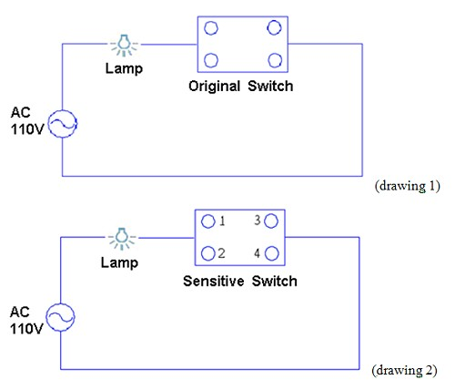

PIR INFRARED LIGHTING SWITCH
Product Characters
| 1. | Sensitive lighting no need to turn on at dark, certainly convenient. |
| 2. | Flexible time to light off after people leave. |
| 3. | No necessary to touch on/off the switch, avoid electric shock and wall-dirty. |
| 4. | Same as original power system, no need to connection new electric wire. |
| 5. | Easy fit, D.I.Y. available. |
| 6. | Same out-look as original switch, available to change directly. |
Product Introductions
| 1. | Do you boiling for forgetting turn off the light, wasting electric power whole night? Do you suffer for switch searching on dark place, being stumbled by furniture (articles)? Such problems happened frequently, especially the place such as basement, warehouse, staircase, hallway, sideway.., where you go through sometimes. With PIR, light on when you arrive and off several seconds later when you leave, Awfully convenience and power save. |
| 2. | Size and out-looking same as traditional switch, available to change directly. Use the same power wave as electric light, same construction , no need new fit. |
| 3. | Available to modify the sensitive distance, sensitive light brilliance and turn off time, dependent on personal interesting and environment. |
| 4. | With switch for automatically on/off and manual on/off, keep the function for manual on/off, no extra switch case needed. |
| 5. | Automatically sensitive lighting on and few seconds later off. No touch, avoid electric shock and wall-dirty around the switch case. |
Product Picture
Operation Description
| 1. | LIGHT/DARK TURNING ADJUSTOR to modify the brilliance sensitive level for start. |
| 2. | SENSITIVE ADJUSTOR to modify the sensitive distance. + longer distance, - shorter distance. |
| 3. | TIMER ADJUSTOR to modify how many times to off after leave. |
| 4. | Press the push-switch once time, change from automatic on/off to hand on/off. Then the LED will shining light, available to hand control light on/off. |
| 5. | Keep press the push-switch over 3 seconds, change hand on/off to automatic on/off, LED little light. |
| 6. | PIR will be stable operation after ten minutes heating upon power on. |
Product Specification
| Measurement | 44×22×37 mm |
| Line Wire | ψ1.6 or ψ2.0 mm cut cover 18mm |
| Voltage | AC 110V |
| Loading Range | 5W～200W tungsten lamp，10W～100W fluorescent lamp or power-save lamp |
| Power Draw | 10mW |
| Sensitive Distance | About 7M |
Assembly Direction

| 1. | Put on one original electric wire to sensitive switch hole 1 or 2, another electric wire on hole 3-4. |
| 2. | Original switch as drawing 1 and change to sensitive switch as drawing 2. |
Notice
| 1. | Please turn off the AC power source before assembly, avoid electric shock. |
| 2. | Please take note product voltage and load specification. |
| 3. | Avoid directly sun-shine and wet. |
| 4. | Product will enter the automatic on/off system after power on. |
| 5. | A little brand save power lamps have different electronic circuit design, will cause noncommittal problem (flash). Please add a 0.1uF 400V polyester film capacitors parallel connection the lamps. |